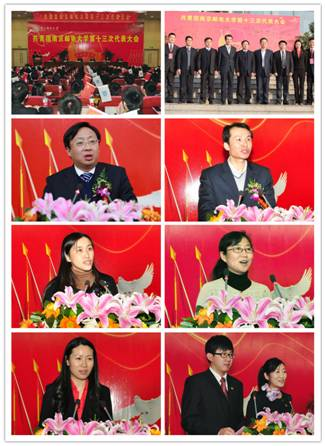

【团代会专题】

--------------------------------
12月19日下午，共青团南京邮电大学第十三次代表大会在仙林校区图书馆四楼报告厅召开。来自全校各基层单位的204名团员代表参加了大会。团省委少先队总辅导员、学校部分管领导姜东，团省委组织部部长、学校部部长俞锋，我校党委书记刘陈，校党委常委、副校长王宗荣、蒋国平、张志华出席了开幕式并在主席台就座。南京大学等25所兄弟高校的团委书记到会祝贺。我校各职能部门、学院的负责人应邀出席了开幕式。共青团中央和全国50多所高校纷纷发来贺信和贺电。
在共青团南京邮电大学第十三届委员会第一次全体会议上，与会代表投票选举王玮等41名同志为共青团南京邮电大学第十三届委员会委员，李印、张敏、凌海峰3名同志为共青团江苏省第十四次代表大会代表，张敏同志当选为共青团南京邮电大学第十三届委员会书记，李晓华、饶林果两位同志当选为副书记，王志锋、叶晓勤、史杨、刘志强、李伯虎、李晓华、肖国丰、张敏、张建颖、赵伟、饶林果11名同志当选为常委。